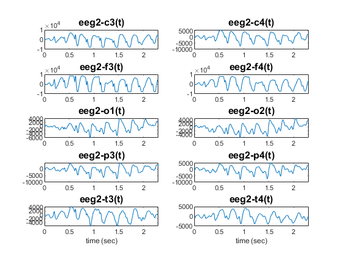
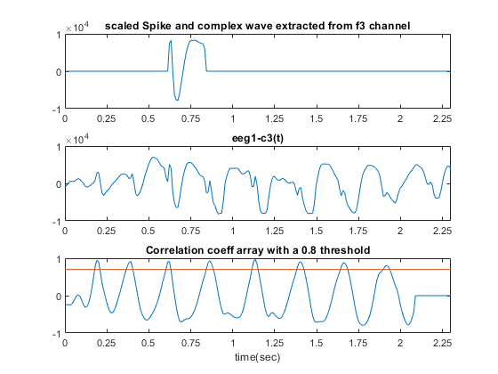
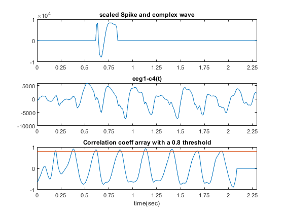
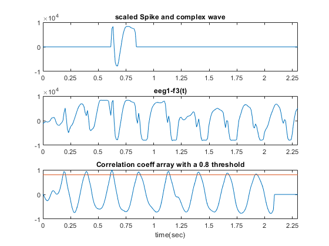
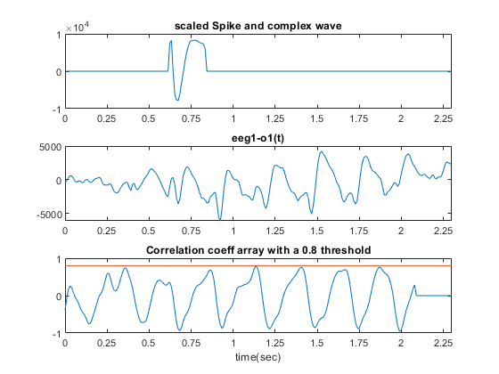
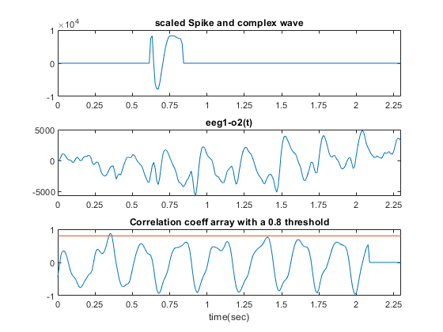
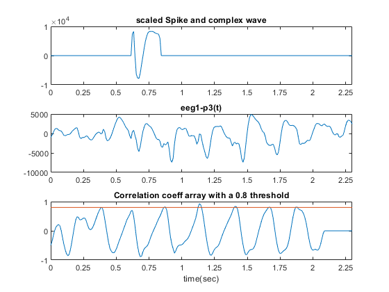
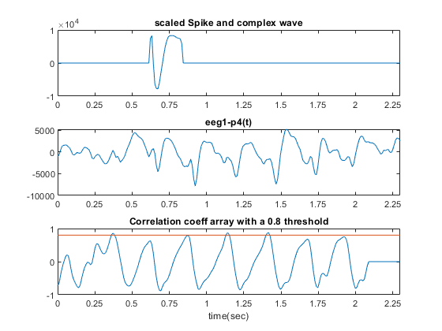
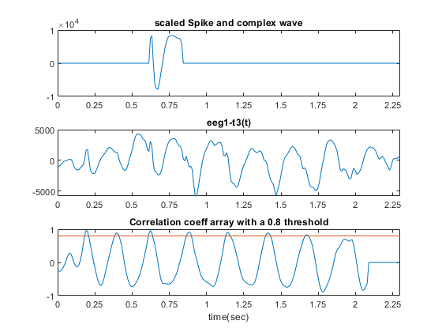
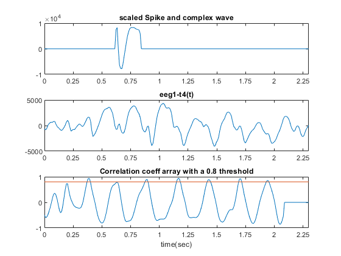

Contents
clc clear all; close all; c3 = transpose(load("eeg2-c3.dat")); c4 = transpose(load("eeg2-c4.dat")); f3 = transpose(load("eeg2-f3.dat")); f4 = transpose(load("eeg2-f4.dat")); o1 = transpose(load("eeg2-o1.dat")); o2 = transpose(load("eeg2-o2.dat")); p3 = transpose(load("eeg2-p3.dat")); p4 = transpose(load("eeg2-p4.dat")); t3 = transpose(load("eeg2-t3.dat")); t4 = transpose(load("eeg2-t4.dat")); Fs = 100; %sampling frequency
let's plot all channels first
t = linspace(0,length(c3)/Fs,length(c3)); %Fs = 100 & signal length is 750 so time interval is 0 to 7.5 sec figure(Name='All Channels in time domain') subplot(5,2,1); plot(t,c3); title('eeg2-c3(t)','FontSize',12); xlim([0 2.3]); subplot(5,2,2); plot(t,c4); title('eeg2-c4(t)','FontSize',12); xlim([0 2.3]); subplot(5,2,3); plot(t,f3); title('eeg2-f3(t)','FontSize',12); xlim([0 2.3]); subplot(5,2,4); plot(t,f4); title('eeg2-f4(t)','FontSize',12); xlim([0 2.3]); subplot(5,2,5); plot(t,o1); title('eeg2-o1(t)','FontSize',12); xlim([0 2.3]); subplot(5,2,6); plot(t,o2); title('eeg2-o2(t)','FontSize',12); xlim([0 2.3]); subplot(5,2,7); plot(t,p3); title('eeg2-p3(t)','FontSize',12); xlim([0 2.3]); subplot(5,2,8); plot(t,p4); title('eeg2-p4(t)','FontSize',12); xlim([0 2.3]); subplot(5,2,9); plot(t,t3); title('eeg2-t3(t)','FontSize',12); xlim([0 2.3]); xlabel('time (sec)'); subplot(5,2,10); plot(t,t4); title('eeg2-t4(t)','FontSize',12); xlim([0 2.3]); xlabel('time (sec)');

Now let's extract the spike and wave complex
svc = f3(0.63*Fs : 0.84*Fs); scaled_svc = zeros(1,length(t)); scaled_svc(0.63*Fs : 0.84*Fs) = svc;
Now It's time for spike and wave complex pattern matching in every channel
figure(Name='Channel c3 pattern matching') c3_cor = my_pattern_match(c3, svc); subplot(311); plot(t,scaled_svc); title('scaled Spike and complex wave extracted from f3 channel'); xlim([0 2.3]); xticks(0:0.25:2.3); subplot(312); plot(t,c3); title('eeg1-c3(t)'); xlim([0 2.3]); xticks(0:0.25:2.3); subplot(313); plot(t,c3_cor); title('Correlation coeff array with a 0.8 threshold'); xlabel('time(sec)'); hold on; plot(t, 0.7*ones(1,length(t))); xlim([0 2.3]); xticks(0:0.25:2.3); figure(Name='Channel c4 pattern matching') c4_cor = my_pattern_match(c4, svc); subplot(311); plot(t,scaled_svc); title('scaled Spike and complex wave'); xlim([0 2.3]); xticks(0:0.25:2.3); subplot(312); plot(t,c4); title('eeg1-c4(t)'); xlim([0 2.3]); xticks(0:0.25:2.3); subplot(313); plot(t,c4_cor); title('Correlation coeff array with a 0.8 threshold'); xlabel('time(sec)'); hold on; plot(t, 0.8*ones(1,length(t))); xlim([0 2.3]); xticks(0:0.25:2.3); figure(Name='Channel f3 pattern matching') f3_cor = my_pattern_match(f3, svc); subplot(311); plot(t,scaled_svc); title('scaled Spike and complex wave'); xlim([0 2.3]); xticks(0:0.25:2.3); subplot(312); plot(t,f3); title('eeg1-f3(t)'); xlim([0 2.3]); xticks(0:0.25:2.3); subplot(313); plot(t,f3_cor); title('Correlation coeff array with a 0.8 threshold'); xlabel('time(sec)'); hold on; plot(t, 0.8*ones(1,length(t))); xlim([0 2.3]); xticks(0:0.25:2.3); figure(Name='Channel f4 pattern matching') f4_cor = my_pattern_match(f4, svc); subplot(311); plot(t,scaled_svc); title('scaled Spike and complex wave'); xlim([0 2.3]); xticks(0:0.25:2.3); subplot(312); plot(t,f4); title('eeg1-f4(t)'); xlim([0 2.3]); xticks(0:0.25:2.3); subplot(313); plot(t,f4_cor); title('Correlation coeff array with a 0.8 threshold'); xlabel('time(sec)'); hold on; plot(t, 0.8*ones(1,length(t))); xlim([0 2.3]); xticks(0:0.25:2.3); figure(Name='Channel o1 pattern matching') o1_cor = my_pattern_match(o1, svc); subplot(311); plot(t,scaled_svc); title('scaled Spike and complex wave'); xlim([0 2.3]); xticks(0:0.25:2.3); subplot(312); plot(t,o1); title('eeg1-o1(t)'); xlim([0 2.3]); xticks(0:0.25:2.3); subplot(313); plot(t,o1_cor); title('Correlation coeff array with a 0.8 threshold'); xlabel('time(sec)'); hold on; plot(t, 0.8*ones(1,length(t))); xlim([0 2.3]); xticks(0:0.25:2.3); figure(Name='Channel o2 pattern matching') o2_cor = my_pattern_match(o2, svc); subplot(311); plot(t,scaled_svc); title('scaled Spike and complex wave'); xlim([0 2.3]); xticks(0:0.25:2.3); subplot(312); plot(t,o2); title('eeg1-o2(t)'); xlim([0 2.3]); xticks(0:0.25:2.3); subplot(313); plot(t,o2_cor); title('Correlation coeff array with a 0.8 threshold'); xlabel('time(sec)'); hold on; plot(t, 0.8*ones(1,length(t))); xlim([0 2.3]); xticks(0:0.25:2.3); figure(Name='Channel p3 pattern matching') p3_cor = my_pattern_match(p3, svc); subplot(311); plot(t,scaled_svc); title('scaled Spike and complex wave'); xlim([0 2.3]); xticks(0:0.25:2.3); subplot(312); plot(t,p3); title('eeg1-p3(t)'); xlim([0 2.3]); xticks(0:0.25:2.3); subplot(313); plot(t,p3_cor); title('Correlation coeff array with a 0.8 threshold'); xlabel('time(sec)'); hold on; plot(t, 0.8*ones(1,length(t))); xlim([0 2.3]); xticks(0:0.25:2.3); figure(Name='Channel p4 pattern matching') p4_cor = my_pattern_match(p4, svc); subplot(311); plot(t,scaled_svc); title('scaled Spike and complex wave'); xlim([0 2.3]); xticks(0:0.25:2.3); subplot(312); plot(t,p4); title('eeg1-p4(t)'); xlim([0 2.3]); xticks(0:0.25:2.3); subplot(313); plot(t,p4_cor); title('Correlation coeff array with a 0.8 threshold'); xlabel('time(sec)'); hold on; plot(t, 0.8*ones(1,length(t))); xlim([0 2.3]); xticks(0:0.25:2.3); figure(Name='Channel t3 pattern matching') t3_cor = my_pattern_match(t3, svc); subplot(311); plot(t,scaled_svc); title('scaled Spike and complex wave'); xlim([0 2.3]); xticks(0:0.25:2.3); subplot(312); plot(t,t3); title('eeg1-t3(t)'); xlim([0 2.3]); xticks(0:0.25:2.3); subplot(313); plot(t,t3_cor); title('Correlation coeff array with a 0.8 threshold'); xlabel('time(sec)'); hold on; plot(t, 0.8*ones(1,length(t))); xlim([0 2.3]); xticks(0:0.25:2.3); figure(Name='Channel t4 pattern matching') t4_cor = my_pattern_match(t4, svc); subplot(311); plot(t,scaled_svc); title('scaled Spike and complex wave'); xlim([0 2.3]); xticks(0:0.25:2.3); subplot(312); plot(t,t4); title('eeg1-t4(t)'); xlim([0 2.3]); xticks(0:0.25:2.3); subplot(313); plot(t,t4_cor); title('Correlation coeff array with a 0.8 threshold'); xlabel('time(sec)'); hold on; plot(t, 0.8*ones(1,length(t))); xlim([0 2.3]); xticks(0:0.25:2.3);








